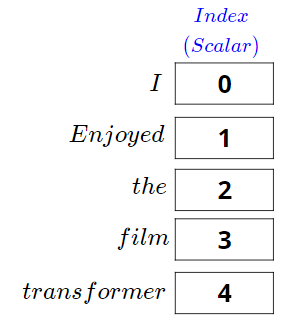
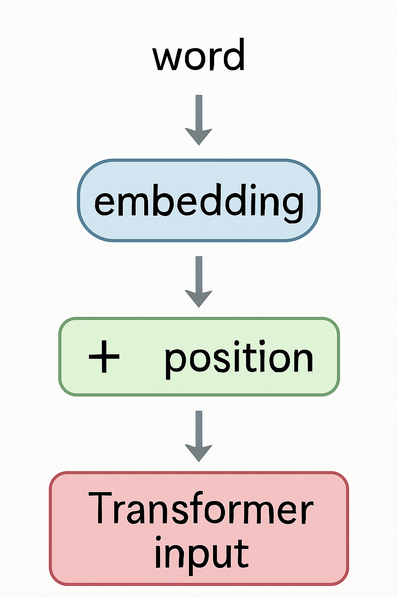
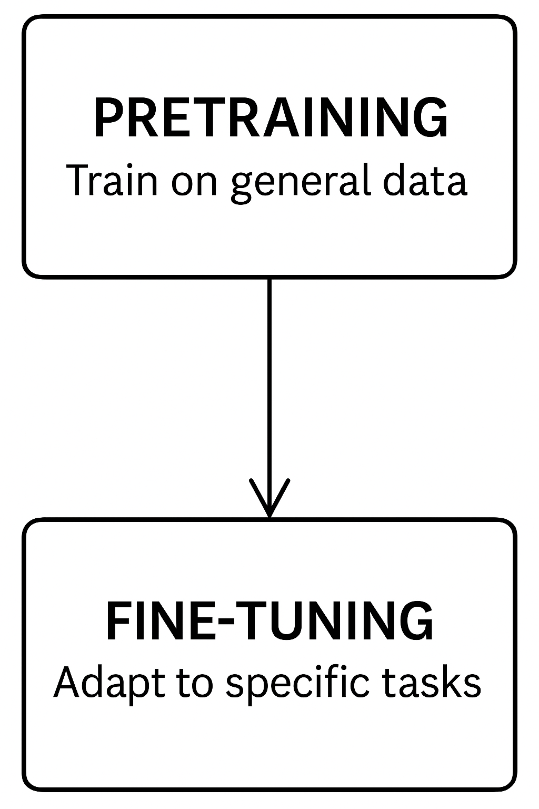

AI Generativa e LLM nella Medicina Clinica e di Laboratorio

AI Generativa e LLM
in Medicina Clinica e di Laboratorio
- Cos’è l’AI Generativa e come sta trasformando la medicina?
- Perché concentrarsi sui Large Language Models (LLM)?
- Obiettivi chiave del corso:
- 🧠 Comprendere i fondamenti dell’AI generativa e degli LLM
- 🧪 Esplorare le applicazioni in ambito clinico e di laboratorio
- 🔄 Confrontare strumenti locali vs commerciali (ChatGPT, Claude, Mistral, ecc.)
- 🛠 Esercitarsi con LM Studio, WebLLM
- Formato del corso: 2 ore di teoria + 2 ore di pratica
Cos’è l’Intelligenza Artificiale?
(E perché medici e biologi dovrebbero interessarsene)
- 🧠 Intelligenza Artificiale (AI) simula il ragionamento umano e il processo decisionale
- 🤖 Due approcci storici:
- AI Simbolica = logica basata su regole (es. sistemi esperti)
- AI Connessionista = ispirata al cervello (reti neurali)
- 📊 L’Apprendimento Statistico (Statistical Learning) fa da ponte:
- Tecniche basate sui dati per apprendere pattern dai dati
- Include regressione, classificazione e clustering
- 🧬 Perché è importante in medicina:
- Molti compiti clinici sono problemi decisionali in condizioni di incertezza
- Dalla diagnosi al triage all’interpretazione dei risultati di laboratorio
- AI = aiuto, non sostituzione
Perché abbiamo bisogno di una nuova AI in Medicina?
Limitazioni dei modelli statistici classici
- 📊 I modelli classici (regressione, alberi decisionali, ecc.) funzionano bene con dati strutturati e tabellari
- 🧬 Ma i dati clinici sono sempre più non strutturati e complessi:
- Referti in testo libero, note multilingue, cartelle cliniche elettroniche (EHR), immagini mediche
- ❌ I modelli statistici faticano con:
- Ambiguità del linguaggio (es. “esso” → “il fegato”?)
- Dati mancanti o rumorosi
- Ragionamento dipendente dal contesto
- 🧠 L’AI Moderna (LLM) può gestire questa complessità con una migliore generalizzazione su testo libero e dati multimodali
Perché abbiamo bisogno di una nuova AI in Medicina?
Limitazioni dei modelli statistici classici

Cosa può fare l’AI tradizionale?
Compiti fondamentali nell’Apprendimento Statistico
- 📈 Regressione: Prevedere un numero dai dati di input
- Esempio: Prevedere la glicemia da età + BMI
- 🧪 Classificazione: Assegnare un’etichetta ai dati di input
- Esempio: “Questa biopsia è maligna o benigna?”
- 🔍 Clustering: Trovare gruppi nascosti in dati non etichettati
- Esempio: Identificare sottotipi di pazienti con espressione genica simile

Perché i Modelli Statistici Faticano con il Linguaggio
Dall’input strutturato alla complessità del mondo reale
- 🧱 I modelli tradizionali si aspettano input strutturati e tabellari
- 💬 Il linguaggio naturale è non strutturato, ambiguo, dipendente dal contesto
- Esempio: “È elevato” — cos’è “esso”?
- 🧠 La comprensione del linguaggio richiede:
- Risoluzione del contesto (es. coreferenza)
- Sintassi e semantica
- Dipendenze a lungo raggio tra le frasi
- 📉 I modelli statistici mancano di memoria o ragionamento — riducono il testo a “bags of words” o vettori fissi
Cos’è una Rete Neurale?
Dai neuroni agli strati all’apprendimento
- 🔢 Le reti neurali sono fatte di unità (“neuroni”) connesse in strati
- 🧠 Ogni neurone prende input → esegue una piccola operazione matematica → passa l’output avanti
- 📚 Regolando i pesi durante l’addestramento, la rete impara i pattern
- 🧬 Questa struttura le permette di catturare relazioni non lineari (vs regressione classica)

Come Imparano le Reti Neurali?
Il ruolo della loss e della backpropagation
- 🧪 Durante l’addestramento, la rete fa una previsione
- 📉 Una funzione di loss confronta la previsione con l’etichetta vera
- 🔁 La Backpropagation regola i pesi per ridurre l’errore
- 🔄 Questo viene ripetuto su molti esempi → il modello impara i pattern

Perché le Reti Neurali Standard Faticano con il Linguaggio
La necessità di memoria sequenziale e attention
- 🔁 Le reti standard trattano gli input come vettori di lunghezza fissa
- 📜 Ma il linguaggio è una sequenza — l’ordine delle parole e il contesto contano
- 🧠 I primi modelli come RNN e LSTM erano progettati per elaborare sequenze
- Usano la memoria per conservare le parole precedenti
- 😕 Ancora limitati: difficile catturare dipendenze a lungo raggio (“esso” riferito 3–4 frasi indietro)
Dal Deep Learning agli LLM
Perché i Transformers hanno cambiato tutto
- 🧠 Deep Learning = reti neurali stratificate
- 🧱 Tipi di architetture:
- MLP: buono per input semplici
- CNN: eccelle in immagini e dati spaziali
- RNN: gestisce sequenze come parlato e testo
- ⚡ Transformer: architettura rivoluzionaria per il linguaggio
- Usa self-attention invece della ricorrenza
- Più veloce, più parallelo, migliore con sequenze lunghe
- 🔁 Pretraining + Fine-tuning: strategia dietro ChatGPT, Claude, Mistral
Dentro il Transformer
Self-Attention e Positional Encoding
- 👁️ Self-Attention: permette al modello di guardare tutte le parole in una frase contemporaneamente
- Ogni parola può “prestare attenzione” (attend) ad altre parole — catturando contesto e significato
- Esempio: in “Il fegato è ingrossato, e ciò potrebbe indicare…”, a cosa si riferisce “ciò”?
- 🧭 Positional Encoding: aggiunge ordine alla sequenza
- I Transformers elaborano l’input in parallelo, quindi le posizioni devono essere codificate esplicitamente
- 🔍 Questi sono ciò che permette agli LLM di gestire dipendenze a lungo raggio nel linguaggio
- 🧠 Base per ChatGPT, BERT e ogni LLM moderno

Cos’è la Self-Attention?
Come i Transformers “capiscono” il linguaggio
- 👀 Nella self-attention, ogni parola guarda tutte le altre parole nella frase
- Ogni parola decide quanta attenzione prestare alle altre
- 🧠 Esempio:
- Frase: “Il fegato è ingrossato perché è infiammato”
- “è” (il secondo) dovrebbe focalizzare l’attenzione su “fegato”, non su “perché” o “ingrossato”
- 🔄 Il modello costruisce una mappa delle relazioni tra le parole
- Aiuta a risolvere i riferimenti, catturare il contesto, capire il significato
- ⚡ La Self-attention è parallela e scala bene a testi lunghi
Come Funziona la Self-Attention?
Tre passi: Query, Key, Value
- 📚 Ogni parola viene trasformata in tre vettori:
- Query (Q): Cosa sto cercando?
- Key (K): Cosa offro?
- Value (V): Quale informazione porto?
- 🔍 Punteggio di Attention tra due parole:
- Moltiplica Query di una parola × Key di un’altra
- 🧮 Poi, i punteggi vengono normalizzati e usati per mescolare i Values
- 🎯 Questo dà a ogni parola una nuova rappresentazione, consapevole del contesto
Esempi Medici di Self-Attention
Come gli LLM risolvono l’ambiguità nel testo clinico
- 📋 Esempio di Nota Clinica: > “Paziente presentatosi con dolore al quadrante superiore destro (RUQ). L’ecografia ha mostrato una lesione ipoecogena. > La TC ha confermato che si trattava di un emangioma. Misurava 2,3 cm.”
- 🧠 Sfida dell’Ambiguità: Quale “si” / “esso” si riferisce a cosa?
- Primo “si trattava” = la lesione (collegandosi alla frase precedente)
- Secondo “esso” (implicito in “Misurava”) = l’emangioma (riferimento precedente immediato)
- 👁️ La Self-attention permette al modello di creare queste connessioni automaticamente
Cos’è il Positional Encoding?
Come i Transformers conoscono l’ordine delle parole
- 🧠 I Transformers vedono tutte le parole insieme — ma devono conoscerne l’ordine
- 🧭 Il Positional Encoding aggiunge informazioni sulla posizione a ogni parola
- 🔢 Due modi per codificare la posizione:
- Aggiungere pattern fissi (es. funzioni seno e coseno)
- Oppure imparare embeddings di posizione durante l’addestramento
- 🧩 Senza positional encoding:
- Il modello tratterebbe le frasi come bags of words non ordinate!

Cosa sono i Word Embeddings?
Trasformare le parole in numeri
- 🔢 I computer hanno bisogno di numeri, non di testo
- 🧠 Embedding = rappresentare una parola come un vettore di numeri
- 📚 Parole simili → vettori simili
- “fegato” vicino a “rene”, lontano da “auto”
- ➡️ Gli embeddings catturano il significato da grandi corpora
Embeddings nei Transformers
Primo passo prima dell’Attention
- 🏗️ Ogni parola di input viene mappata al suo vettore di embedding
- ➡️ Poi viene aggiunto il positional encoding
- ⚡ Il vettore combinato entra negli strati del Transformer
- 🎯 Gli embeddings vengono affinati (fine-tuned) durante l’addestramento

Cos’è il Pretraining?
Insegnare a un modello competenze linguistiche generali
- 📚 Pretraining = addestrare un modello su enormi dataset di testo
- 🧠 Obiettivo: imparare grammatica, fatti, pattern di ragionamento
- 🔄 Nessun compito specifico — il modello prevede parole mancanti o parole successive
- 🌍 Fonti dati: libri, siti web, articoli medici, conversazioni
- 🎯 Risultato: un modello general-purpose pronto per l’adattamento
Cos’è il Fine-tuning?
Specializzare il modello per un compito specifico
- 🔧 Fine-tuning = addestramento aggiuntivo su dataset specifici
- 🧪 Obiettivo: adattare il modello a compiti medici, clinici o di laboratorio
- 🏥 Esempi:
- Prevedere malattie dai sintomi
- Riassumere risultati di laboratorio
- Generare referti medici
- 🎯 Risultato: un modello specializzato focalizzato su un dominio

Interpretabilità negli LLM
Perché capire il comportamento del modello è importante
- 🔍 Interpretabilità = capire come e perché un modello dà una risposta
- 🧠 Importante in contesti clinici e di laboratorio:
- Spiegare previsioni e raccomandazioni
- Costruire fiducia con utenti e pazienti
- ⚙️ Tecniche emergenti:
- Visualizzazione dell’attention
- Attribuzione delle feature (es. SHAP, LIME)
- Prompting Chain-of-thought
- 🚨 Sfida: gli LLM sono complessi e non completamente trasparenti
Limitazioni degli LLM
Allucinazioni e Bias Algoritmico
- 🎭 Allucinazioni: il modello inventa informazioni plausibili ma false
- Pericolo: risposte sicure ma errate
- ⚖️ Bias Algoritmico: il modello riproduce i bias dai dati di addestramento
- Rischio: esiti ingiusti per certi gruppi
- 🚑 In uso clinico:
- Richiedere sempre la validazione umana
- Preferire il fine-tuning specifico del dominio
Esempi Medici di Allucinazioni
Quando gli LLM fabbricano informazioni cliniche
🩺 Prompt: “Quali sono gli intervalli normali per i test di funzionalità epatica?”
✅ Risposte accurate:
- “Intervallo normale ALT: 7-56 U/L”
- “Intervallo normale AST: 8-48 U/L”
❌ Risposte allucinate:
- “Intervallo normale GGT: 15-30 U/L” (reale: 9-48 U/L)
- “Albumina: 3.5-6.0 g/dL” (reale: 3.5-5.0 g/dL)
- 🚨 Pericoli clinici:
- Falsa fiducia in valori inaccurati
- Gli intervalli di riferimento variano per laboratorio/popolazione
- Errori sottili più difficili da rilevare di quelli ovvi
LLM in Medicina Clinica e di Laboratorio
Pro e Contro
| ✅ Vantaggi | ⚠️ Limitazioni |
|---|---|
| Recupero rapido delle informazioni | Allucinazioni: risposte plausibili ma errate |
| Assistenza nel supporto decisionale | Bias algoritmico dai dati di addestramento |
| Riassumere testi medici complessi | Mancanza di completa interpretabilità |
| Aiutare a generare referti e documentazione | Rischio di eccessiva fiducia negli output |
| Supporto disponibile 24/7, scalabile | Dipendenza dalla validazione umana per la sicurezza |
LLM: Cercano di Piacerti, Non la Verità
Perché plausibile ≠ corretto
- 🎭 Gli LLM sono addestrati a sembrare convincenti, non a dire la verità
- 🤝 Obiettivo: produrre risposte che sembrino utili, coerenti, piacevoli
- ❌ Rischio: se incerto, il modello indovina fatti plausibili ma errati
- 🚨 Pericolo in contesti clinici: informazioni errate possono sembrare molto credibili
- 🧠 Richiedere sempre revisione critica e validazione umana
⚠️ Attenzione: Plausibilità NON è Verità
Warning
- Una risposta fluida e sicura può comunque essere sbagliata.
- Gli LLM sono premiati per sembrare utili, non per essere accurati.
- In applicazioni cliniche e di laboratorio: validare sempre prima di fidarsi.
Parametri Chiave del Modello negli LLM
Come controllare il comportamento dell’AI
- 🌡️ Temperature: livello di casualità (più alta = più creativa, più bassa = più focalizzata)
- 🎯 Top-p (nucleus sampling): limita le scelte alle parole più probabili
- ✂️ Max tokens: lunghezza massima dell’output
- 🔁 Frequency penalty: scoraggia la ripetizione delle stesse parole
- 🧠 Affinare questi aiuta ad adattare il modello alle esigenze cliniche
Impostazioni di Temperature per Uso Clinico
Trovare il giusto equilibrio tra creatività e accuratezza
- 🌡️ Scala di Temperature:
- 0.0-0.3: Più deterministico, coerente
- 0.4-0.7: Creatività bilanciata
- 0.8-1.0: Massima creatività, imprevedibilità
- 🩺 Raccomandazioni cliniche:
- Documentazione paziente: 0.1-0.2
- Diagnosi differenziale: 0.3-0.5
- Materiali educativi per pazienti: 0.4-0.6
- Brainstorming di ricerca: 0.7-0.8
⚠️ Esempio di impatto:
Temperature 0.1: > “Enzimi epatici elevati possono indicare danno epatocellulare.” Temperature 0.7: > “Enzimi epatici elevati potrebbero suggerire danno epatocellulare, ostruzione biliare, effetti di farmaci o varie condizioni sistemiche.”
Cosa Sono i Tokens?
I mattoni dei modelli linguistici
- 🧩 Tokens = piccoli pezzi di testo (parole, parti di parole, simboli)
- 📏 I modelli elaborano il testo token per token, non carattere per carattere
- 🧮 1 parola ≈ 1–3 tokens (a seconda della lingua e della complessità)
- ✂️ Max tokens limita la lunghezza totale di input + output
- ⚡ Costi e velocità dipendono spesso dal numero di tokens usati
Esempio: Come il Testo Diventa Tokens
Frase clinica reale scomposta in tokens
📄 Frase: > “Paziente dimesso in condizioni stabili.”
🧩 Tokenizzazione:
- “Paziente”
- ” dimesso”
- ” in”
- ” condizioni”
- ” stabili”
- “.”
🔢 Totale: 6 tokens
✅ Anche frasi brevi possono usare più tokens!
Come gli LLM Elaborano le Immagini
Trasformare le immagini in linguaggio
- 📸 Le immagini vengono convertite in feature numeriche (array di numeri)
- 🔎 Un encoder di visione estrae elementi chiave: forme, colori, oggetti, testo
- 🧠 Le feature vengono interpretate dal modello linguistico
- 🖋️ Il modello genera descrizioni, risposte o didascalie basate sugli input visivi
- ⚡ Uso clinico: analisi di raggi X, MRI, vetrini patologici, diagrammi
Applicazioni Multimodali in Medicina
Oltre il testo: LLM con capacità visive
- 🔬 Applicazioni cliniche:
- Descrivere immagini radiologiche
- Interpretare pattern ECG
- Analizzare vetrini di microscopia
- Leggere note mediche scritte a mano
- ⚡ Esempi di workflow:
- Carica immagine + aggiungi domanda clinica
- Il modello interpreta il contesto visivo + testuale
- La risposta incorpora entrambe le modalità
🔍 Esempio di prompt: > “Questa è una radiografia del torace di un paziente di 65 anni con dispnea. Descrivi cosa vedi ed eventuali anomalie potenziali.”
⚠️ Limitazioni:
- Non approvato dalla FDA per la diagnosi
- Prestazioni variabili tra tipi di immagine
- Richiede verifica clinica
Modelli Linguistici Generali vs Specifici per la Medicina
Scegliere lo strumento giusto per applicazioni cliniche
- 🌍 LLM Generali
Addestrati su vasti dati internet ➔ Versatili ma superficiali in medicina.
Esempi: ChatGPT, Claude, Mistral.
- 🩺 LLM Specifici per la Medicina
Addestrati su cartelle cliniche, linee guida, articoli scientifici ➔ Accurati ma meno flessibili.
Esempi: PathChat, BrainGPT, LiVersa.
Note
⚖️ Compromesso chiave:
Ampie competenze (modelli generali) vs Competenza approfondita (modelli medici)
Applicazioni Specifiche per Specialità
Casi d’uso degli LLM nelle discipline mediche
- 🫀 Cardiologia:
- Assistenza nell’interpretazione ECG
- Protocolli di gestione dell’insufficienza cardiaca
- 🧠 Neurologia:
- Documentazione della valutazione cognitiva
- Descrizione dei pattern delle crisi epilettiche
- 🔬 Patologia:
- Refertazione standardizzata dei campioni
- Ricerca bibliografica per reperti rari
- 🩸 Medicina di Laboratorio:
- Guida all’interpretazione dei test
- Documentazione e standardizzazione dei protocolli
- Pianificazione di sequenze complesse di test
Modalità Chat vs Modalità API
Due modi per interagire con gli LLM
- 💬 Modalità Chat:
➔ Interattiva, non richiede programmazione.
➔ Ideale per brainstorming, esplorazione.
➔ ❗ Meno controllo e riproducibilità.
- 🔗 Modalità API:
➔ Query programmatiche strutturate.
➔ Ideale per automazione, scalabilità.
➔ ✅ Pieno controllo sugli output.
Note
⚡ Consiglio Chiave:
Usa la Modalità Chat per esplorare.
Usa la Modalità API per automatizzare.
Come Funziona Realmente la Modalità Chat
Il modello rilegge tutto ogni volta
- 📚 Ogni nuovo messaggio = il modello rilegge tutta la conversazione precedente
- 🔄 La cronologia della chat + il nuovo messaggio utente vengono inviati di nuovo ad ogni turno
- 📈 Costo e tempo di risposta crescono con la lunghezza della chat
- 🧠 Il modello non ha memoria tra le sessioni: solo il contesto attuale
Finestra di Contesto: Quanto un LLM Può Ricordare
Perché i limiti di token contano per le conversazioni
- 🧠 Finestra di contesto = numero massimo di tokens che il modello può elaborare contemporaneamente
- 📏 Include sia il tuo prompt sia la risposta del modello
- 🚫 Se la conversazione supera il limite, i vecchi tokens vengono eliminati (“dimenticanza”)
- 📉 Chat lunghe possono perdere informazioni precedenti importanti
- 🔍 Consiglio pratico: mantieni i prompt concisi, riassumi quando necessario
Finestre di Contesto e Quanto Coprono
Limiti di memoria dei principali LLM
| Modello | Finestra di Contesto | Pagine Approx. |
|---|---|---|
| 🤖 GPT-3.5 | ~4,096 tokens | ~10 pagine |
| 🧠 GPT-4 (standard) | ~8,192 tokens | ~20 pagine |
| 🧠 GPT-4 (esteso) | ~32,768 tokens | ~80 pagine |
| 🤯 Claude 3 | ~200,000 tokens | ~500 pagine |
| 🌟 Gemini 2.5 Pro | ~2,000,000 tokens | ~5,000 pagine |
| 🧩 Mistral 7B | ~8,192 tokens | ~20 pagine |
| 🦙 Llama 2 13B | ~4,096 tokens | ~10 pagine |
Cosa Succede Quando Superi la Finestra di Contesto?
Come gli LLM gestiscono troppe informazioni
- ⏳ Quando il limite di token viene superato, i tokens più vecchi vengono eliminati
- 🧠 Il modello “dimentica” le parti iniziali della conversazione
- 🚑 Istruzioni critiche potrebbero andare perse
- 📉 Prestazioni e coerenza peggiorano
- 🧹 Consiglio pratico: riassumi o riafferma i punti chiave periodicamente
Limitazioni della Finestra di Contesto nella Pratica Clinica
Cosa succede quando i documenti medici superano i limiti di token
📄 Riassunto di dimissione tipico: 500-1000 parole = ~750-1500 tokens
⚠️ Rischi di troncamento:
- L’anamnesi medica precedente potrebbe essere tagliata
- Informazioni sui farmaci alla fine del documento potrebbero andare perse
- Le istruzioni di follow-up potrebbero mancare
💡 Esempio clinico: Riassunto del paziente con lista farmaci alla fine
- Con 4K tokens: Informazioni complete elaborate
- Con 2K tokens: Istruzioni critiche sull’anticoagulazione perse
Proteggere il Contesto in Conversazioni Lunghe
Tecniche per evitare la perdita di informazioni critiche
- 🛡️ Istruzioni Ancorate:
- Ripeti regole o istruzioni critiche ogni pochi prompt
- 📝 Iniezione di Riassunto:
- Riassumi i punti chiave e reinseriscili durante la chat
- 📚 Prompting Strutturato:
- Organizza gli input chiaramente: diagnosi, trattamenti, follow-up
- 🚦 Sessioni Brevi:
- Ricomincia nuove chat dopo aver raggiunto il 70–80% del limite di token
Cosa sono le API?
Connettersi agli LLM come professionisti
- 🔗 API = Application Programming Interface
- 🛠️ Un modo per inviare domande e ricevere risposte programmaticamente
- 📬 Funziona come “inviare un messaggio” al modello e ottenere una risposta
- ⚡ Permette automazione, scalabilità e integrazione nei sistemi clinici
- 🧠 Non c’è bisogno di “chattare” manualmente — i flussi di lavoro avvengono automaticamente
Valutazione Quantitativa delle Prestazioni
Misurare l’efficacia degli LLM nei compiti clinici
- 📊 Metriche chiave:
- Accuratezza: Correttezza delle informazioni mediche
- Coerenza: Risposte affidabili a query simili
- Tasso di allucinazione: Frequenza di contenuti fabbricati
- Rilevanza clinica: Applicabilità alla cura del paziente
- 🔍 Metodi di valutazione:
- Panel di revisione esperti
- Confronto con gold standard
- Verifiche di coerenza inter-modello
- Scenari clinici strutturati
- 📈 Confronto di risultati campione:
| Modello | Accuratezza | Tasso di Allucinazione |
|---|---|---|
| GPT-4 | 89% | 4.5% |
| Claude 3 | 91% | 3.2% |
| Mistral | 85% | 6.7% |
| Med-PaLM | 93% | 2.8% |
Esempio Pratico: Modalità Chat
Prompt Clinico per Esplorazione
- 🧪 Scenario: redazione di un riassunto di dimissione
- 💬 Prompt: “Riassumi la degenza ospedaliera del paziente focalizzandoti su diagnosi, trattamento e istruzioni di follow-up.”
- ⚡ Obiettivo: generazione rapida di testo per revisione del clinico
- ⚠️ Promemoria: validare sempre per accuratezza e rilevanza clinica
Esempio Pratico: Modalità API
Automatizzare Flussi di Lavoro Clinici
- 🔗 Scenario: elaborazione batch di referti di laboratorio
- 🛠️ Chiamata API: Invia 100 testi di referti di laboratorio tramite API, ricevi 100 riassunti clinici
- ✅ Vantaggio: automazione, riproducibilità, efficienza
- ⚠️ Promemoria: monitorare gli output per coerenza e validità medica
LLM Commerciali vs Open-source
Confronto tra due mondi nell’AI clinica
- 🏢 Modelli commerciali (es. ChatGPT, Claude, Gemini)
- Codice chiuso, proprietario
- Prestazioni elevate, aggiornamenti costanti
- Preoccupazioni sulla privacy, controllo limitato
- 🧪 Modelli open-source (es. Llama, Mistral, Mixtral)
- Disponibili pubblicamente, personalizzabili
- Maggiore flessibilità e privacy
- Le prestazioni variano, richiedono risorse locali
- ⚖️ Compromesso: facilità d’uso vs indipendenza e controllo
Scegliere tra LLM Commerciali e Open-source
Qual è meglio per le tue esigenze cliniche?
| 🏥 Scenario | 🚀 Approccio Raccomandato |
|---|---|
| Prototipazione rapida o brainstorming | Modello commerciale (accesso facile, prestazioni elevate) |
| Gestione di dati sensibili dei pazienti | Modello open-source (auto-ospitato, privato) |
| Necessità di forte precisione del linguaggio clinico | Modello open-source affinato (fine-tuned) (personalizzabile) |
| Hardware/risorse locali limitate | Modello commerciale (basato su cloud) |
| Pieno controllo su deployment e aggiornamenti | Modello open-source (indipendenza) |
Considerazioni sulla Sicurezza del Deployment Locale
Proteggere i dati dei pazienti con LLM on-premise
- 🔒 Vantaggi della sicurezza:
- Nessun dato lascia la rete istituzionale
- Traccia di audit completa all’interno dell’organizzazione
- Nessuna dipendenza da politiche sulla privacy di terze parti
- Conformità ai requisiti di residenza dei dati
- ⚠️ Sfide di implementazione:
- Requisiti hardware: server GPU o cluster
- Necessità di supporto IT e manutenzione
- Gestione degli aggiornamenti e del versioning del modello
- Limitazioni delle prestazioni vs modelli cloud
Note
Considera approcci ibridi: dati sensibili su modelli locali, dati non-PHI su modelli cloud
LM Studio & WebLLM: LLM Locali per Uso Clinico
Esegui modelli AI privatamente e offline
- 🖥️ LM Studio:
- App desktop per Windows, macOS, Linux
- Scarica ed esegui modelli open-source localmente
- Offre interfaccia chat e server API
- Ideale per compiti offline, sensibili alla privacy
- 🌐 WebLLM:
- Esegue LLM direttamente nel tuo browser
- Nessuna installazione o backend necessario
- Alimentato da WebGPU per inferenza veloce
- Ottimo per deployment leggeri e portatili
WebLLM: Eseguire LLM direttamente nel tuo browser
Un modo semplice e privato per usare l’AI localmente
- 🌐 Funziona direttamente in Chrome, Edge, Safari (nessuna installazione)
- ⚡ Alimentato da WebGPU: inferenza locale veloce
- 🔒 Nessun dato lascia il tuo computer
- 🛠️ Supporta chat, riassunto documenti, Q&A
- 🧠 Ottimo per compiti clinici leggeri ed esperimenti
Come Usare WebLLM per Riassunti Clinici
Passi semplici per riassumere documenti clinici
- 🌐 Apri WebLLM nel tuo browser
- 📋 Copia e incolla il testo clinico nella chat
- 💬 Scrivi questo prompt:
“Riassumi le informazioni cliniche chiave, focalizzandoti su:
- Diagnosi primaria
- Trattamenti somministrati
- Istruzioni di follow-up
- Condizioni del paziente alla dimissione.” ✅ Il modello elaborerà il testo localmente e genererà un riassunto!
Prompt Engineering per Applicazioni Cliniche
Tecniche per migliorare accuratezza e affidabilità
🔍 Prompting Chain-of-Thought: > “Prima analizza i valori di laboratorio, poi identifica le anomalie, > poi correla con i sintomi, e infine suggerisci possibili diagnosi.”
📋 Esempi Few-Shot: > “Esempio 1: Paziente con [sintomi]… Diagnosi: [condizione] > Ora diagnostica: Paziente con febbre, tosse produttiva…”
🧩 Output Strutturato: > “Formatta la tua risposta come: Valutazione: [testo], Piano: [testo], > Follow-up: [testo], Educazione Paziente: [testo]”
Considerazioni Normative
Quadro giuridico per l’AI in sanità
- 🏛️ Regolamenti chiave:
- HIPAA (USA): Requisiti per le Informazioni Sanitarie Protette (PHI)
- GDPR (UE): Restrizioni sul trattamento di categorie particolari di dati
- MDR (UE): Classificazione dell’AI come dispositivo medico
- ⚖️ Sfide di conformità:
- Requisiti di residenza dei dati per l’elaborazione di PHI
- Diritto alla spiegazione per decisioni assistite dall’AI
- Tracce di audit per contenuti generati dall’AI
Warning
Verifica sempre se il tuo uso di LLM richiede: 1. Consenso del paziente 2. Accordi sul trattamento dei dati 3. Classificazione come dispositivo medico
Requisiti Etici di Documentazione
Trasparenza nelle note cliniche assistite da AI
- 📝 Buone pratiche:
- Rivelare l’assistenza AI nella documentazione
- Specificare quali parti sono state generate dall’AI
- Documentare i passaggi di verifica umana
- Mantenere la separazione tra suggerimenti AI e giudizio clinico
- ✅ Esempio di divulgazione: > “Questo riassunto della valutazione è stato redatto con assistenza AI e revisionato dal Dr. Johnson per l’accuratezza. Tutte le interpretazioni e le decisioni mediche sono state verificate indipendentemente.”
Considerazioni sulla Responsabilità
Gestire il rischio quando si usano LLM in contesti clinici
- ⚠️ Scenario giuridico attuale:
- Nessun precedente chiaro per la responsabilità AI in sanità
- Standard professionali ancora in evoluzione
- Posizione predefinita: il clinico ha la responsabilità ultima
- 🛡️ Strategie di mitigazione del rischio:
- Documentare procedure di verifica per output AI
- Stabilire flussi di lavoro chiari per usi critici vs non critici
- Formare il personale su limitazioni e requisiti di verifica
- Mantenere la consapevolezza delle limitazioni specifiche del modello
Note
Considera di consultare la gestione del rischio e consulenti legali prima di implementare LLM per il supporto decisionale clinico.
Analisi Costi-Benefici degli LLM in Contesti Clinici
Considerazioni sul ROI per implementazioni mediche
- 💰 Fattori di costo:
- Costi API: $0.50-$20 per 1.000 note cliniche (dipende dal modello)
- Tempo del personale risparmiato: 20-40% di riduzione del tempo di documentazione
- Formazione e implementazione: 40-80 ore per dipartimento
- 📊 Esempi di ROI reali:
- Ospedale A: 50% di riduzione del tempo per il riassunto di dimissione (risparmio 15 min/paziente)
- Clinica B: 30% di aumento della completezza e qualità delle note
- Laboratorio C: 70% più veloce nella stesura di protocolli per nuovi test
Note
Il ROI viene tipicamente raggiunto entro 3-6 mesi concentrandosi su compiti di documentazione ad alto volume.